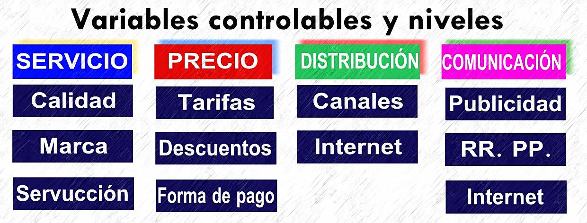
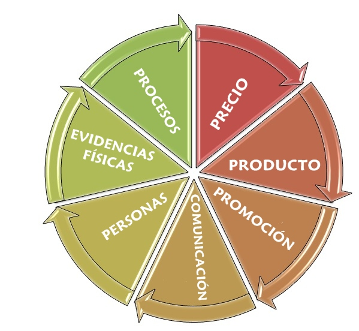

Se refiere a las variables controlables del marketing mix. Sobre ellas, recaen todas las técnicas y estrategias que las cuatro variables establecen:

Sin embargo, la actual concepción de los servicios, en especial los servicios turísticos, desplaza y permite desarrolla una nueva dimensión del marketing mix para los servicios turísticos, basada en la aplicación de un total de siete variables controlables. Por supuesto, el mercado de eventos resulta claramente afectado por la incidencia de estas tres nuevas variables, que también pueden ser controlables. En el siguiente gráfico podemos encontrar estas nuevas variables: las evidencias físicas, los procesos y las personas
Antes de dar inicio al estudio de las cuatro grandes variables, es conveniente analizar en qué consiste cada una de estas tres nuevas variables, lo que debe hacerse de una forma crítica, que permita interpretar si realmente se hallan dentro de este campo de las variables controlables.

Las EVIDENCIAS FÍSICAS conforman una variable totalmente controlable, por la cual mostraremos a nuestros clientes pruebas, basadas estas en elementos tangibles. En el marketing general resultaría muy sencillo. Un fabricante de lavadoras podría mostrar una lavadora funcionando, pero en nuestro mercado de eventos resulta más complejo. Por eso, puede ser necesario girar visitas a instalaciones, ofrecer servicios de demostración como un determinado menú,... El "clipping" podría ser una técnica utilizable en este caso.
Los PROCESOS, que serán objeto de estudio más adelante, resultan fundamentales para la puesta en marcha de servicios como los eventos. Se trata de establecer estándares de trabajo que permitan alcanzar unos objetivos determinados. Si queremos simplificar la expresión de la gestión por procesos, diremos que éstos nos delimitan cómo deben hacerse siempre las cosas, las haga quien las haga.
Por último, las PERSONAS, que al fin y al cabo, son quienes llevan a cabo los procesos. Decía Philip Kotler que “los servicios son personas”. Aparte de novedosas técnicas de “servucción” que persiguen estandarizar los procesos mediante la sustitución del personal en contacto por soporte físico, los servicios siguen siendo cuestión de las personas. Es cierto que existen cambios constantes y patentes en los últimos años, como por ejemplo la posibilidad de realizar un auto check in en un establecimiento hotelero, o que podremos encontrarnos con un cajero automático en la recepción de un hotel. Sin embargo, siempre que haya un servicio habrá una persona.